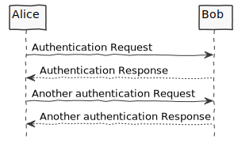

Documentation Guide
Mkdocs and PlantUML is used to generate the Handbook of this project. It is helpful to install mkdocs
to generate a searchable html version of this handbook.
Mkdocs Commands
# Create a new project.
mkdocs new [dir-name]
# Start the live-reloading docs server.
mkdocs serve
# Build the documentation site.
mkdocs build
# Print this help message.
mkdocs help
PlantUML
- PlantUML is a tool to create diagrams from plain text
- files must be placed in the folder docs/diagrams
- as a suffix for PlantUML files, .plantuml is used
- this is required for the Makefile, to create image on the local machine
- and the GitHub Action to build and deploy the GitHub Page of this project
- The Visual Studio Code plugin, provides code highlighting, code completion and a live preview, ...
Example Diagram

Makefile
- The Makefile to create png or svg images from plain text is in the docs folder
- it is just needed for local development
- In the case that plantuml is not in the bin folder of this project, it will be automatically downloaded
Overview Targets
| Target | Description |
|---|---|
| all | Build png and svg images |
| png | Build png images |
| svg | Build svg images |
| clean | Delete all png and svg images |